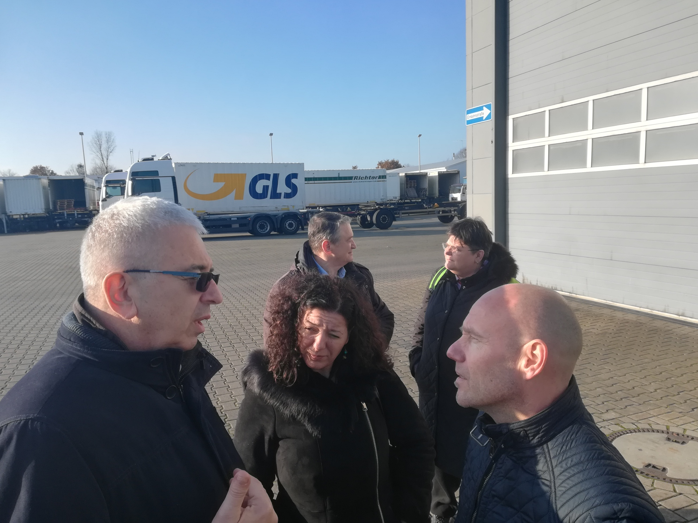
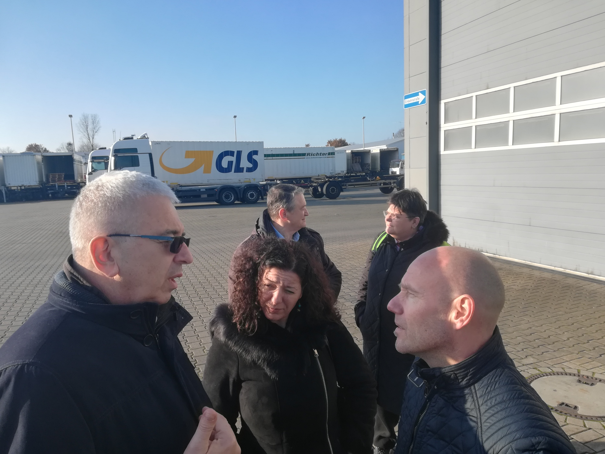
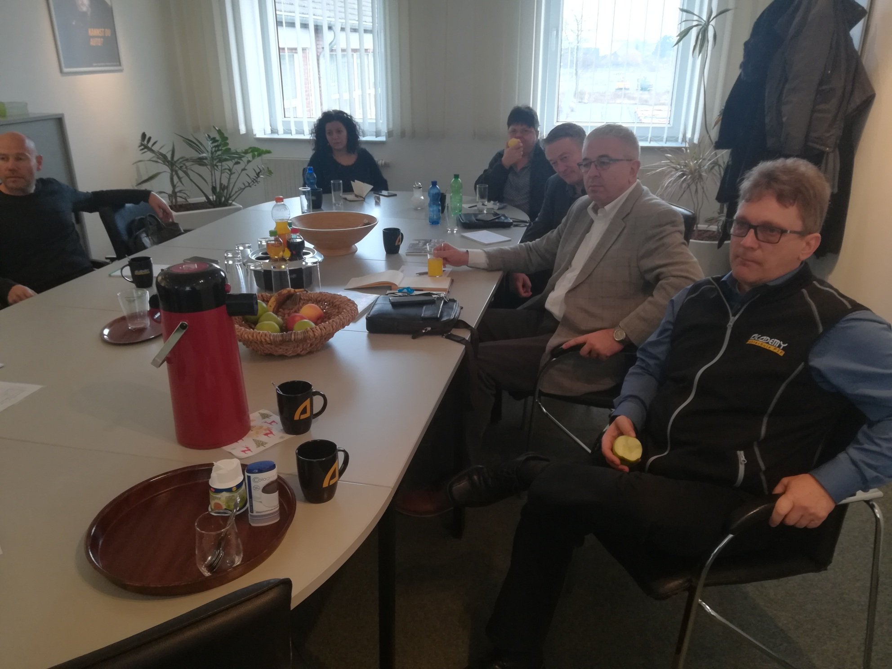
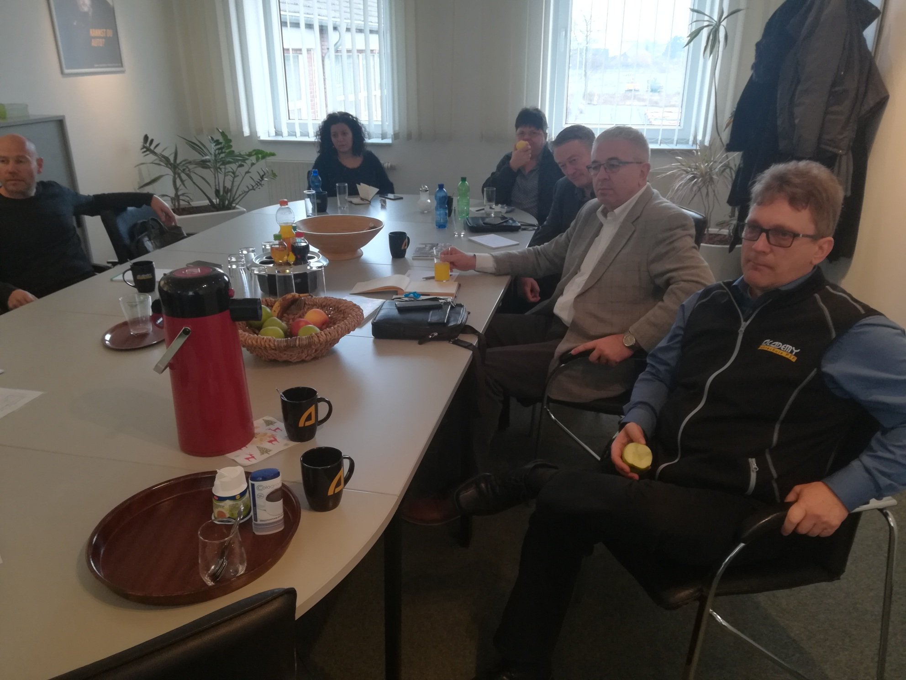

15/12/2019
Годишња скупштина пословног удружења "међународни транспорт"
У петак, 13.12.2019. године одржана је XIX Годишња Скупштина Пословног удружења "Међународни Транспорт" и 16. по реду манифестација Трак Бизнис Феир. Поново се на једном месту окупио велики број учесника сектора транспорта из земље и региона, најзначајнији комерцијални партнери, као и представници јавног сектора. Наш тим је представљајући ДевелоППП пројекат Рихтер Транспорт активно учествовао на овогодишњој традиционалној манифестацији, која се показала као релевантан скуп за промоцију оваквог пројекта који предвиђа креирање тренинг центра у Београду, разраду његовог наставног плана и одржавање радионица из области системског транспорта и утицаја ноћне вожње.


10/12/2019
Студијска Посета Рихтер Транспорту У Везелу, Немачка
У првој седмици децембра одржана је студијска посета компанији Рихтер Транспорт у Везелу у Немачкој. Упознавање са њиховим техничким и пословним капацитетима и размена искустава у едукацији професионалних возача. Посебан део студијске посете Рихтер Транспорту представљала је презентација технологије Свап транспортног система. Одржан је и званичан састанак са локалним удружењем транспортних предузећа VVWL на тему ДевелоППП пројекта и потенцијалне сарадње. Додатни део студијске посете представљала је и посета локалним транспортним предузећима, као и возачкој академији Шлиске која активно учествује у развоју тренинга професионалних возача камиона и возила свап транспортних система. На поменутој академији Шлиске одржана је и радионица на тему развоја наставног плана у Србији, а која је предвиђена у оквиру овог ДевелоППП пројекта.


 

 



20/10/2019
Презентација Рихтер Транспорт Девелоппп Пројекта И Дискусија
У оквиру програма ДевелоППП успостављеног од стране Немачког министарства за развој и привредну сарадњу - БМЗ и Секва – непрофитне развојне организације из Немачке, одржана је панел презентација и дискусија са циљем званичног представљања ДевелоППП пројекта оснивања тренинг центра за транспорт робе у друмском сабраћају у Србији. Носилац пројекта је немачко транспортно предузеће Рихтер Транспорт са својим тренинг центром у граду Везел у покрајини Северна Рајна Вестфалија. Рихтер Транспорт са својим немачким пројектним конзорцијумом у оквиру пројекта успоставља тренинг центар за транспорт робе у друмском сабраћају, уз увођење решења немачких стандарда системског транспорта и повећање капацитета и знања у сектору транспорта робе у Србији кроз побољшање и додатни развој вокационог тренинга. Циљ овог пројекта је унапређење капацитета професионалне наставе у транспорту робе у друмском саобраћају у Србији, уз сарадњу предавача из ове области из Србије и Немачке и размену искустава из праксе. Пројекат траје годину дана и у предвиђа креирање новог тренинг центра у Београду, разраду његовог наставног плана, одржавање радионица из области системског транспорта и утицаја ноћне вожње, организацију студијских путовања, успостављање пилот тренинга и утицај на стручну наставу у смислу побољшања квалитета кроз позитивне примере из праксе. Званични сарадник пројекта у Србији је и Пословно удружење Међународни транспорт.